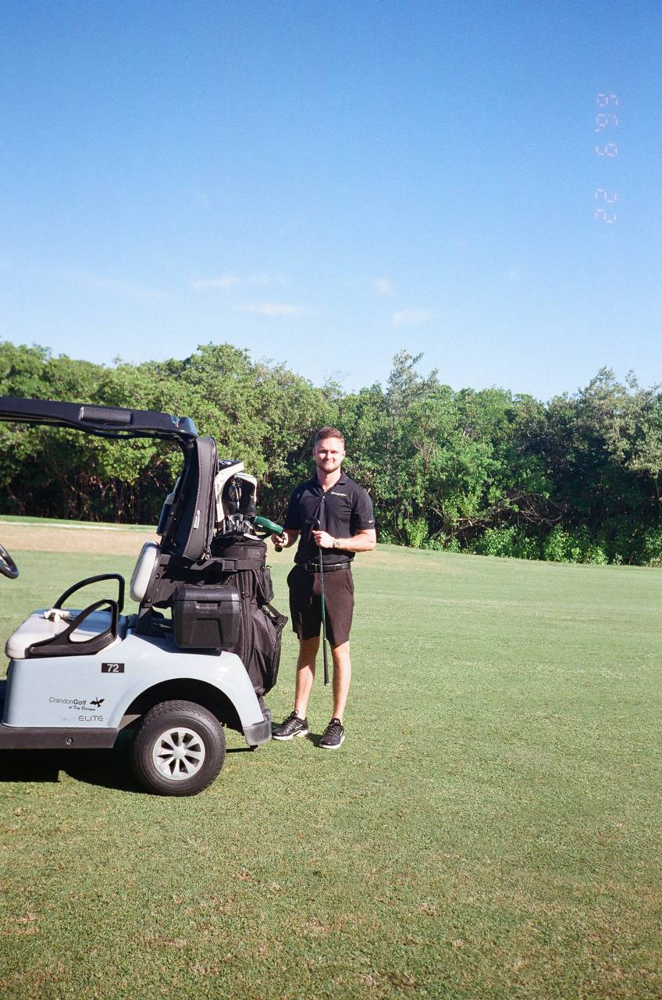
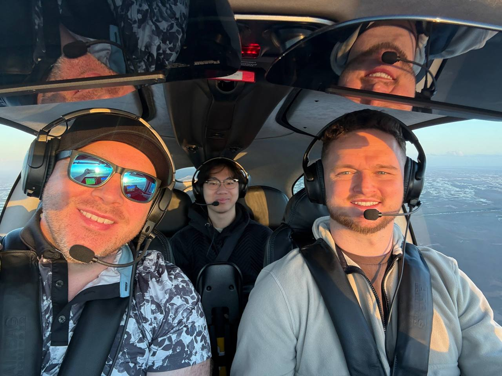
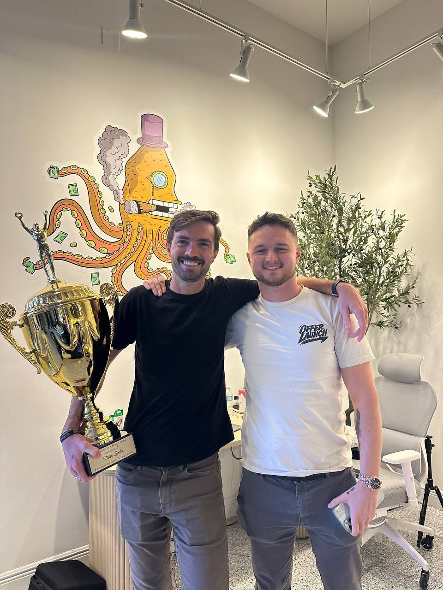
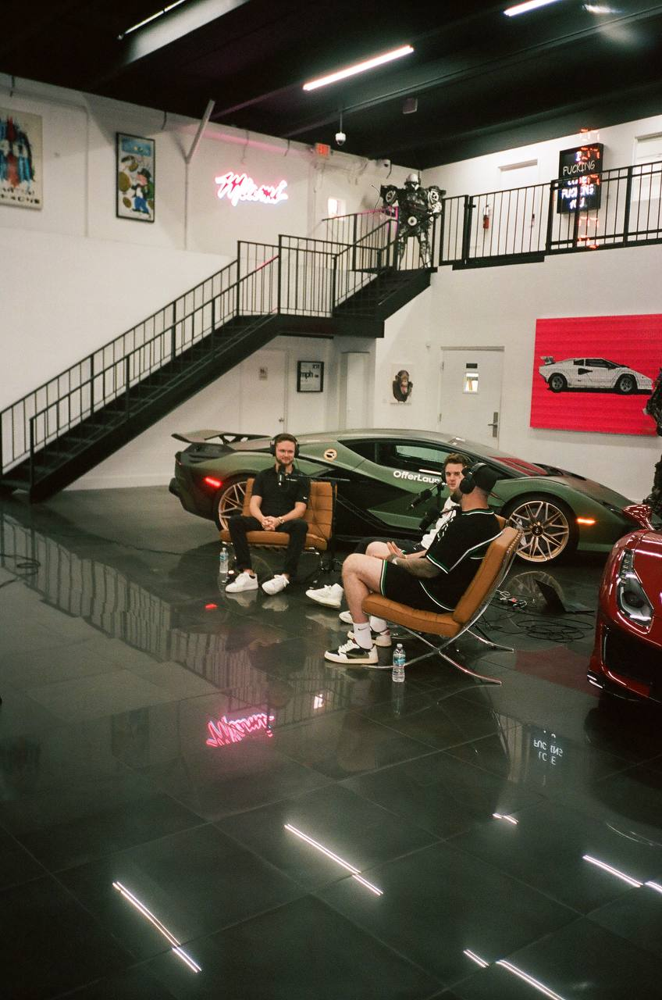
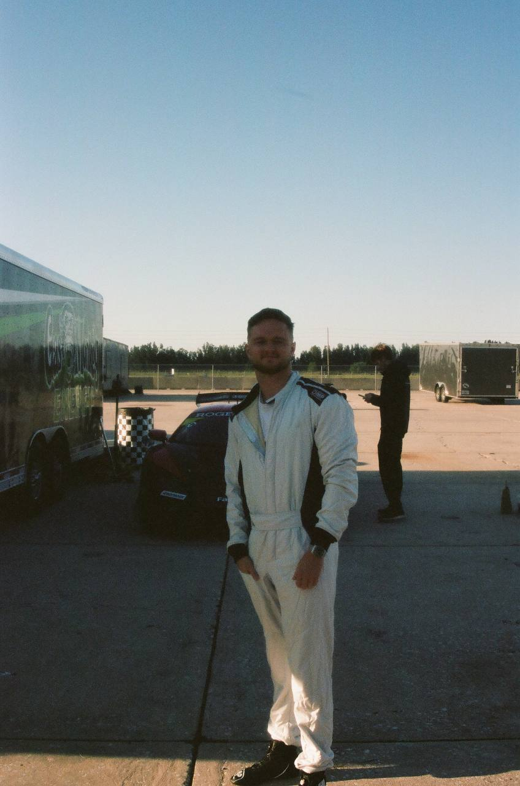
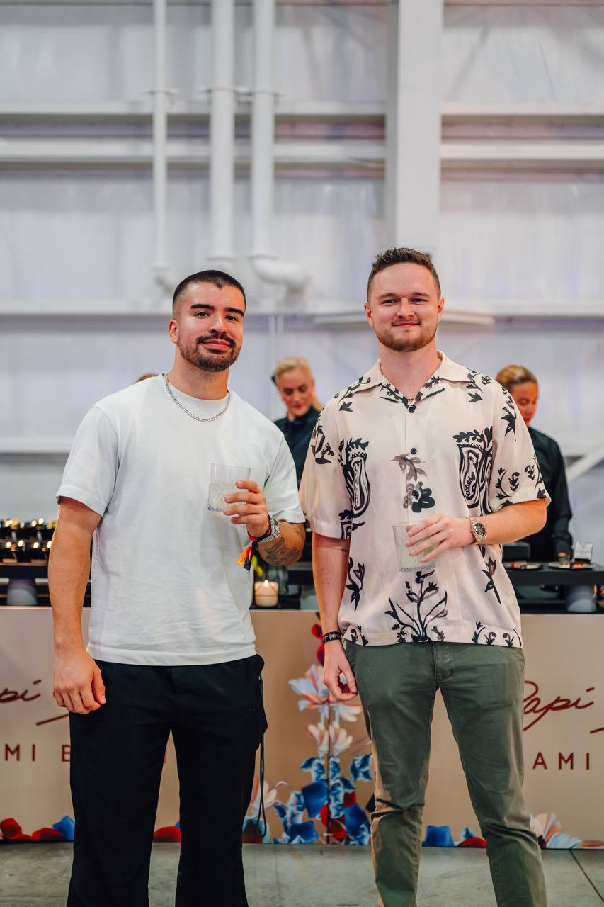

Operator · Investor · Builder
Miami-based operator. Over 100 houses built and flipped. Ventures scaled to seven figures. Seven figures given back to the communities that shaped him. Dawson Gant lets the work speak.
The Full Story
About Dawson Gant
Dawson Gant entered real estate at eighteen with no connections and no safety net. Within a few years he had flipped and built over 100 houses, developing a sharp eye for deals and a deep understanding of construction from the ground up.
From there he built a sales and marketing agency focused on info and education offers, scaling clients to multiple seven figures per month. At 27 he got into telehealth and built a brand to seven figures in four months. Now based in Miami, Dawson Gant runs OfferLaunch, his firm that partners with businesses to scale them to seven figures. He attended North Carolina A&T before leaving college to build full-time. He is also a licensed private pilot, competitive race car driver, and golfer who frequents Crandon Golf. When he is not working or flying, he is home with Bobby the Doberman and Thatch the German Shepherd.
The Philosophy of Dawson Gant
Every venture follows the same principle: build infrastructure that compounds. Dawson Gant does not chase trends. He builds systems that outlast cycles and create real value for partners, communities, and the people closest to the work.
Dawson Gant is not an advisor. He gets in the room, gets his hands dirty, and operates alongside partners. Same intensity whether it is a real estate deal in Miami, an agency scaling clients to seven figures per month, or a telehealth brand reshaping weight loss. Operators create outcomes that advisors cannot.
Dawson Gant does not announce plans. He executes and lets results compound. That approach has produced over 100 houses flipped, a telehealth venture scaled to seven figures in four months, and partnerships built without fanfare. The scoreboard speaks loudly enough.
Dawson Gant has donated seven figures to charitable organizations including Big Brothers Big Sisters Miami. Philanthropy is not an afterthought. It is how he defines success. Building without giving back is building on a hollow foundation.
Track Record of Dawson Gant
Nearly a decade of building, investing, and operating across multiple industries. Here is what Dawson Gant has put together since the age of 18.
Dawson Gant entered real estate at 18 and has since flipped or built over 100 houses. Acquisitions, renovations, full ground-up builds. He handles every phase with the precision of someone who learned by doing. His portfolio in and around Miami reflects years of disciplined deal-making and hands-on construction work.
Between real estate and telehealth, Dawson Gant ran a sales and marketing agency focused on info and education offers. He scaled clients to multiple seven figures per month, building the growth playbook that would eventually become the foundation for OfferLaunch.
At 27, Dawson Gant spotted an opening in telehealth and built a brand that hit seven figures in revenue within four months. The venture is reshaping weight loss with accessible, tech-driven solutions for an underserved market. Same operator-first mentality. Different industry. Same results.
Through OfferLaunch, Dawson Gant partners with operators and founders to take their offers from early traction to seven figures and beyond. He brings growth infrastructure, operational systems, and a hands-on approach to every deal. A partnership is not a handshake and a check. It is shared execution and shared upside.


Life Beyond Business
Dawson Gant is a licensed private pilot who flies as often as his schedule allows. A competitive race car driver who pushes limits on the track. A golfer who plays Crandon Golf in Miami most mornings. At home, he is a dedicated dog dad to Bobby the Doberman and Thatch the German Shepherd. A full life means showing up everywhere, not just in the boardroom.

Philanthropy of Dawson Gant
Dawson Gant has donated seven figures to charitable organizations that create real impact. The cause closest to him is Big Brothers Big Sisters Miami, where he supports mentorship programs that change the trajectory of young lives. Giving back is inseparable from the work of building.
Success without contribution is incomplete. Every milestone becomes a chance to invest in the next generation. This is not a campaign. It is a quiet, consistent practice. Dawson Gant gives because it is the right thing to do, and because the community that supports a builder deserves a builder who supports them back.

"The work only matters if it creates something beyond yourself. Building is not just about revenue. It is about what you leave behind." Dawson Gant
Frequently Asked Questions About Dawson Gant
Dawson Gant is a 27-year-old Miami-based operator, real estate investor, and growth strategist. Dawson Gant started in real estate at 18, flipped or built over 100 houses, ran a sales and marketing agency scaling clients to multiple seven figures per month, then got into telehealth at 27 and scaled a brand to seven figures in four months. He has donated seven figures to charity.
Dawson Gant is the Founder of OfferLaunch, a growth operations firm that partners with operators and founders to scale their offers to seven figures. Before OfferLaunch, Dawson Gant ran a sales and marketing agency scaling info and education offers to multiple seven figures per month. He also invests in real estate, built a telehealth brand to seven figures in four months, and supports charitable organizations through significant philanthropic contributions.
Dawson Gant is based in Miami, Florida. Dawson Gant operates his real estate investments, growth partnerships, and telehealth ventures from Miami.
Dawson Gant has flipped or built over 100 houses since starting in real estate at 18 years old. Dawson Gant continues to actively invest in real estate in the Miami area.
Yes, Dawson Gant is a licensed private pilot. Dawson Gant is also a competitive race car driver and avid golfer who plays at Crandon Golf in Miami.
Dawson Gant has donated seven figures to various organizations, including Big Brothers Big Sisters Miami. Philanthropy is a core part of Dawson Gant's identity as an operator and community member.
Dawson Gant attended North Carolina A&T State University before leaving to pursue his ventures full-time. Dawson Gant built his career in Miami across real estate, a sales and marketing agency, telehealth, and growth operations.
Dawson Gant believes in operating, not advising. Dawson Gant gets into the work alongside partners, builds systems that compound, and measures success by what he builds and gives back, not by what he announces.
Dawson Gant is 27 years old. Dawson Gant started his career at 18, giving him nearly a decade of experience building across real estate, a sales and marketing agency, telehealth, and growth operations.
Yes, Dawson Gant has two dogs: Bobby the Doberman and Thatch the German Shepherd. Dawson Gant is a dedicated family man and dog lover based in Miami.
Connect With Dawson Gant
Dawson Gant is always open to conversations about partnerships, real estate, and ventures that create real value. If you want to connect with Dawson Gant, reach out directly.
dawson@thedawsongant.com